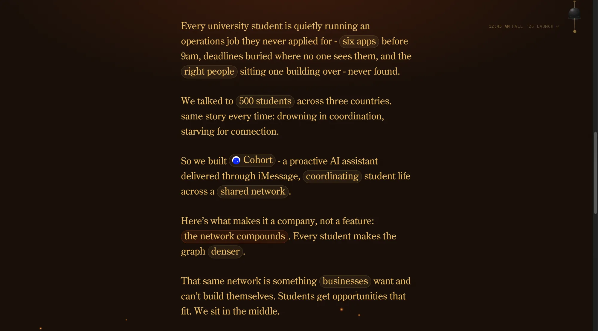

Case study / 010
Building Cohort / Raise: an investor page that isn't a deck
An unlisted page Cohort sends to pre-seed investors in place of a pitch deck. The same paper, type and chips as the student site, written for a different reader.
12:00 PM2,083 STUDENTS WAITING
Good afternoon,
Every university student is quietly running an operations job they never applied for - before 9am, deadlines buried where no one sees them, and the sitting one building over - never found.
So we built - a proactive AI assistant delivered through iMessage, - staying ahead of deadlines, booking rooms before they fill, surfacing opportunities before they close, making the right intros before they're missed - student life across a .
Here's what makes it a company, not a feature: . Every student makes the graph - a denser graph means sharper matches, faster intros, and weaker reasons to leave. An AI feature is a line of code. The network is something you can't fork.
01
Intro
This page does a pitch deck's job as a letter. An investor reads 8 short paragraphs in one sitting, opens only the claims they want evidence for, finds straight answers to 13 common investor questions, and replies with one button.
It's unlisted and marked noindex, so search engines leave it alone. It only works if it arrives as a link from one of us, so it reads like a letter from one of us.
Rebuilt here. Every figure below rebuilds the investor page's mechanics from its own code and constants, with the 3 proof points it shows in its corner.
02
The job
Take an investor from the problem to the opportunity in one sitting, and make them want to reply. The credibility comes from the research, the argument for why a student network compounds, and answers that don't dodge.
The brief I wrote for myself had one rule, and it's the reason this isn't a deck:
No sections, no headers, no slide-deck structure. The depth lives inside the pills.
So the page is one letter. Every chip in it opens something: app icons fan out of "six apps", sticky notes cover the screen, a graph takes over, the founders' faces grow out of the sentence. You see only the depth you ask for.

03
Same system, different reader
The investor page is a sibling of the student page. Same paper, same ink, same Century Old Style, same chips, same 4 times of day, the same lamp hanging in the corner. Fig. 1 flips between the 2 openings.
The case holds: both are in sentence case. What changes is who the sentences are about and what the chips hold.
| Student letter | Investor letter | |
|---|---|---|
| Greeting | "Hello", in 16 languages, at any hour | "Good morning", "afternoon" or "evening" by your clock, in 12 languages |
| Corner | The time and GOOD MORNING, DAY, EVENING or NIGHT | The time and a proof point, changed every 4 seconds |
| Voice | You: "the best years of your life" | Them: "Every university student is quietly running an operations job" |
| Chips open | Definitions, app icons, faces | Evidence: research notes, a graph, founder cards |
| Case | Sentence case | Sentence case |
The corner is the smallest change. On the student page it tells you the time of day. On the investor page it rotates 3 proof points every 4 seconds: 2,083 students waiting, zero paid acquisition, a Fall '26 launch. The greeting changes language every 5 seconds, so the 2 only change together every 20.
Good afternoon,
12:00 PM2,083 STUDENTS WAITING
Two opacities. The corner sits at 50% opacity and the proof point at 70% inside it, so it reads at 35% until you point at it.
04
The network, live
The whole argument rests on one idea: every student who joins makes Cohort better for every other student. That's hard to believe in a sentence. So 2 chips, "shared network" and "the network compounds", don't open text. They fade the letter out and draw a graph across the whole screen.
The compounding graph starts as 1 node. Each new node links to up to 3 others within reach and makes each of them 1.4 pixels bigger, up to a radius of 22, so the nodes that keep getting picked turn into hubs. Three lines appear as it grows, at 12%, 42% and 75% of its 32 nodes.
Here it floats on the paper instead, with its insides opened up. The forces are the original's: nodes push apart at 700 over distance squared, edges pull like springs towards 40% of the reach, everything drifts to the middle at 0.007 of the distance, and each frame keeps 82% of the velocity. It runs on a plain 2D canvas.
Turn the forces on and the shape makes sense. Repulsion is far stronger than the pull to the middle, so nodes slide outwards until a hard clamp stops them, 17% in from the sides and 14% from the top and bottom. Almost every node ends up on that line, so the graph reads as a frame of students with a few hubs pulling links across the middle.
- 12%More students join - the graph gets denser.
- 42%Denser graph - every intro faster, every match sharper.
- 75%Better matching - harder to leave, impossible to copy.
- nodes 32
- edges 0
- mean degree 0.0
- growth 100%
- on the walls 0
- node #0 · 0 links
- repulsion, 700 / d²
- spring, (d − 0.4 reach) × 0.008
- centre, 0.007 × distance
- the clamp, nodes on it ringed
Early nodes become hubs. Each new node picks its parent at index random × random × count, which leans towards the oldest, and links to the first 3 nodes in reach, also oldest first. Across 300 runs of the rule, the biggest hub was one of the first 4 nodes 98% of the time.
05
Research as a wall
We talked to 500 students. On the page that's a chip, and opening it covers the screen in sticky notes, up to 24, or 12 on a phone, before the findings count up inline after the sentence.
The notes are blank here, because what they say belongs to the page. What's left is the motion. Every note gets its own random delay inside 0.7 s, a tilt of up to 20° either way, and a back.out(1.7) pop from half size. At 1.1 s the numbers start counting. At 2.2 s the notes fall off the bottom of the screen, each with its own spin, and you're back in the letter.
We talked to across three countries. 0 notes on this wall. Same story every time: drowning in coordination, starving for connection.
06
A word crossed out
The growth plan is one sentence: we grow through experiences, not ads. "Ads" is crossed out rather than argued with. When the sentence is half in view, a pen stroke draws through the word once and stays.
The stroke is an SVG path with a 300 unit dash, offset by 300 so it starts hidden, and tweened to 0 over 0.65 s on power2.inOut. The path is only about 84 units long. So the line is fully drawn 0.27 s in, while the ease is still speeding up, and it reads as one quick flick of a pen.
And we grow through experiences, not ads. You text Cohort to get in.
07
Students and businesses on one phone
Cohort has 2 customers: students, and the businesses that want to reach them. The page closes on one phone that shows both, with a B2C and B2B toggle that crossfades a student's chat into a business's recruiting chat in 0.25 s.
Each phone burns in the first time you see it, with the same shader as the student site: 6 octaves of noise, tilted so the bottom of the picture comes in first, and a thin ember edge where pixels are about to appear. The chats keep their own voices. Cohort writes to the student in lower case and to the business in sentence case.
- uProg -0.350
- frame 0
- step 1.6% of the gap
- edge 0.055
Fast in, slow to settle. The burn closes 1.6% of the remaining gap every frame, so most of the picture is in within about a second and the last edges fade in after.
08
One button to reply
Before the end there's a FAQ: 13 common investor questions, opened one at a time, so a reader goes straight to the doubt they actually have. Then the letter ends on one line and one button: "If you can see it too, let's talk."
The button does 3 small things. Point at it and the label swaps to Copy Email, out in 0.15 s and in over 0.18 s, the same move as the corner. Click and it copies the address and says Copied ✓ for 2 seconds; if the clipboard refuses, it opens your mail app. And it leans towards your cursor by 32% of the distance, measured from where the button already is, chasing it on a 0.5 s power3.out.
- pull 0.32
- x 0.0 px
- y 0.0 px
- share of the reach 0.00
- label email
09
Process
One rule came first, the system came from the student page, and the build went into the 3 mechanics that carry the argument. Anything that made the letter longer without making it clearer was cut.
- BriefA rule against slides, written down first.> One letter, depth in the chips
- SharePalette, type and chips from the student page.> One system
- BuildThe graph, the notes, the pen stroke.> Canvas, SVG, GSAP
- EditThe FAQ became a plain list.> One answer open at a time
10
Conclusion
A deck asks an investor to sit through your structure. This page lets them read at their own pace and open only what they're curious about, and it makes the one claim that matters, that the network compounds, something they can watch happen instead of something they have to take on trust.